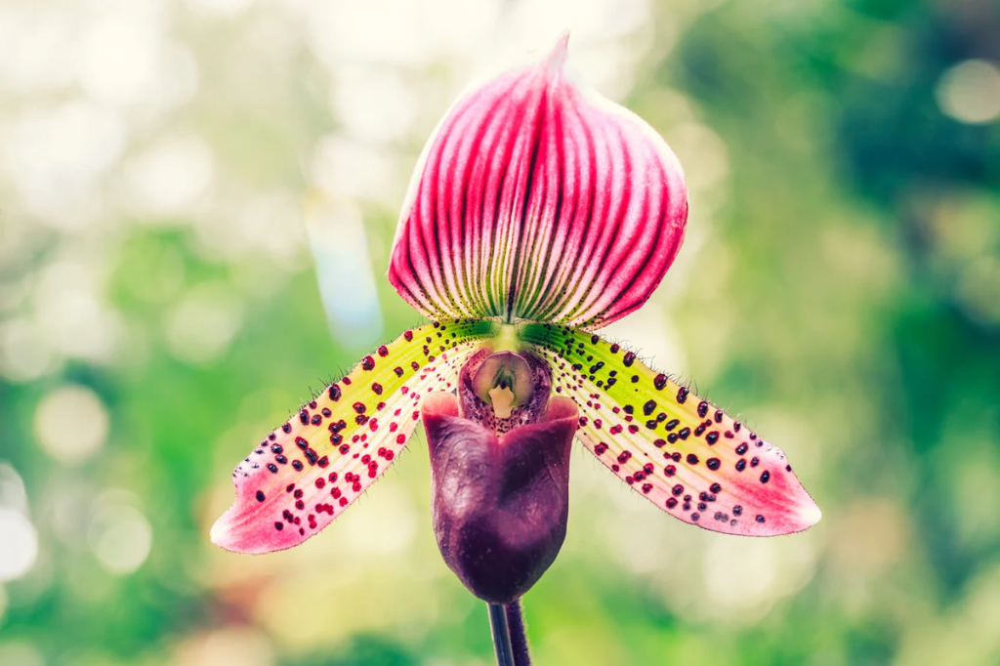
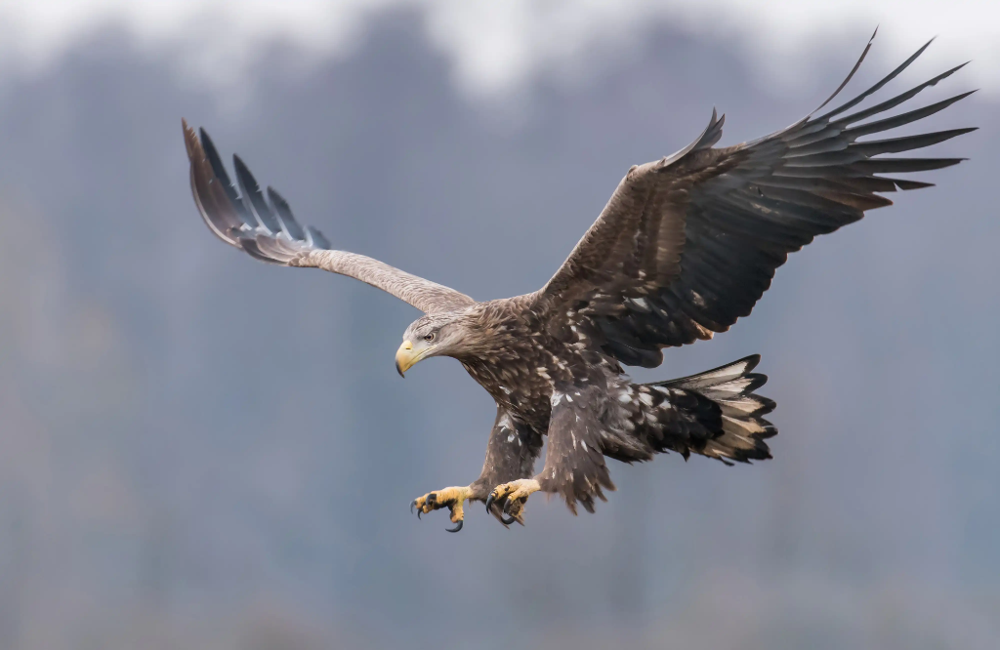
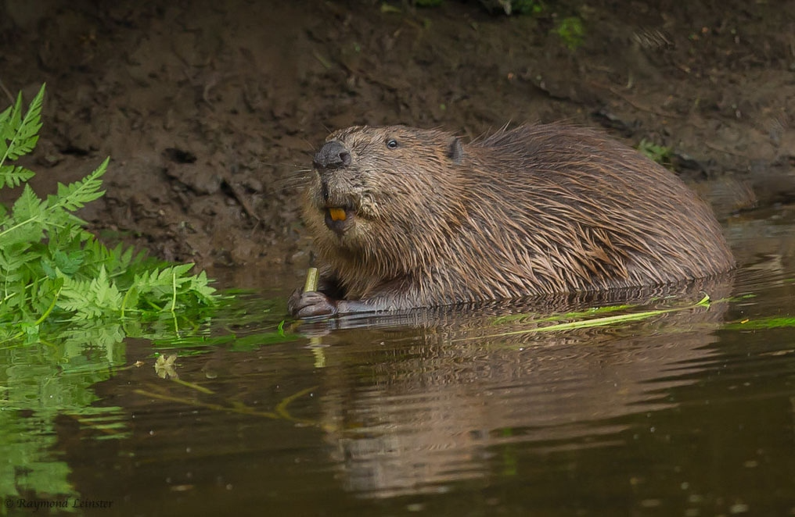

Industrial plant
A factory where goods are produced.
Example: An industrial plant can affect the air and water.Environmental inspection
Complete 7 challenges, prove the value of the ecosystem and collect the secret code.
This interactive quest will test your knowledge of local flora and fauna, environmental threats, and conservation rules. You'll identify rare species, solve puzzles, and help protect the unique ecosystem of the Ivkina River valley.
Challenges include:
This quest is an educational project and may contain fictional scenarios or simplified information for learning purposes. Some details may not fully correspond to the current real-world situation in Nizhne-Ivkino.
Choose the correct terms from the glossary.
A factory where goods are produced.
Example: An industrial plant can affect the air and water.A protected natural feature or area with special value.
Example: The river valley is a natural monument.An area of a town where people live.
Example: The residential district is far from the forest.Not planned or managed by an official group.
Example: Unorganized tourists may harm the environment.Coming from another country.
Example: Foreign visitors should follow local nature rules.Connected with sports or physical activity.
Example: Sporting events should not disturb rare animals.All the plants in a particular area.
Example: The wetland flora includes rare orchids.All the animals in a particular area.
Example: The local fauna includes beavers and eagles.All the animals or people living in an area.
Example: Pollution can reduce the beaver population.Read the inspector's report and examine the clues. The photos are temporary placeholders.
Test your knowledge of the rules for protecting rare species.
The photos are temporary placeholders. Choose the correct description for each species.



Arrange the sixteen fragments to restore the full photo of a white-tailed eagle.
The first letters of the answers make an important word for protecting nature.
1. A bird-built shelter high in a tree
2. A wild creature, such as a beaver or an eagle
3. A marked path through the forest
4. Rare and one of a kind
5. The waterway beside Nizhne-Ivkino
6. A large raptor with a white tail
Drag each item into the right bin, or select an item and then tap a bin.
Use the digits collected from all seven challenges.